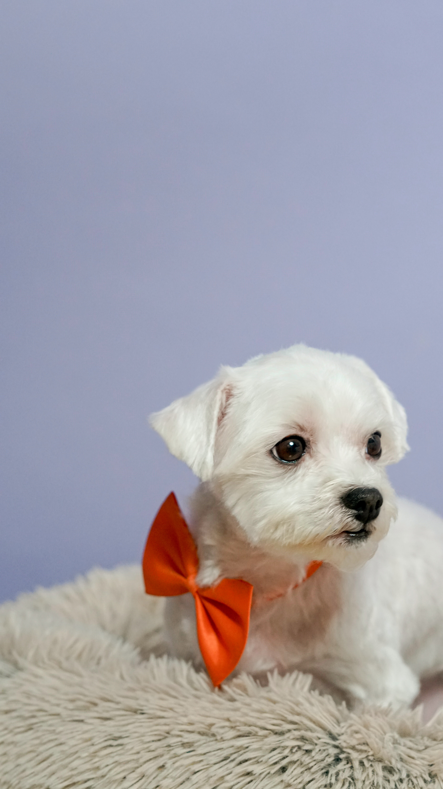
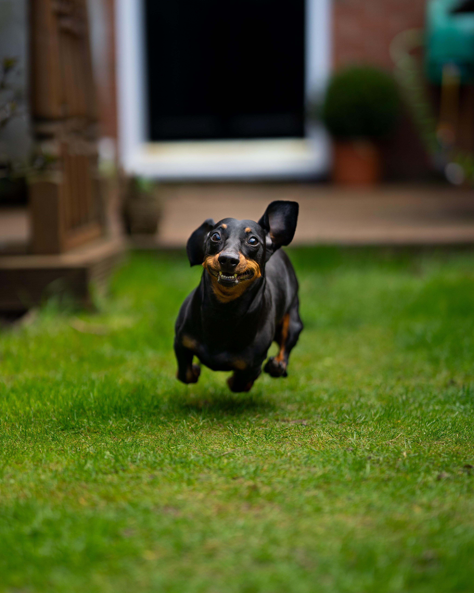
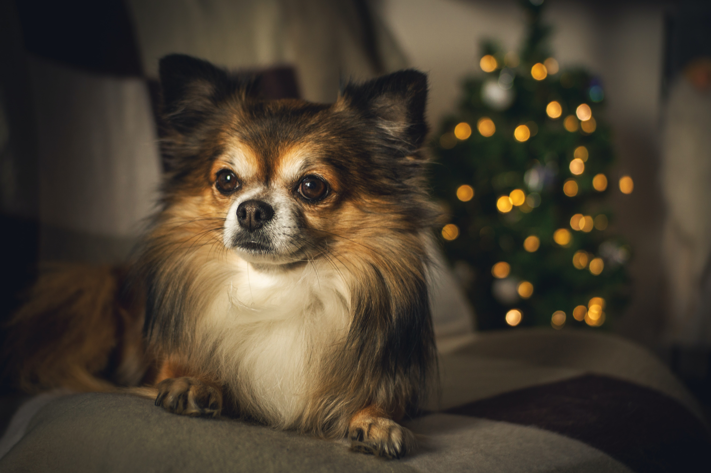
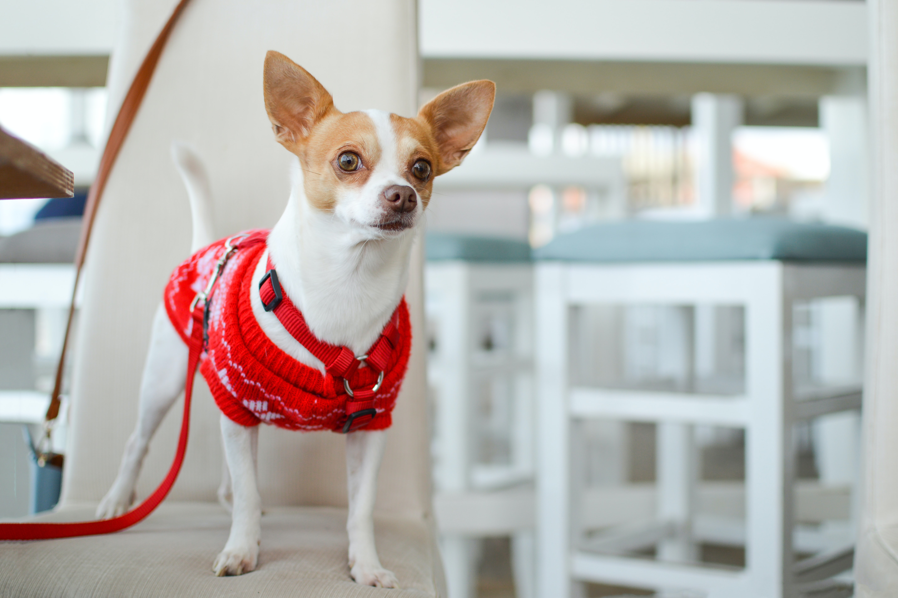
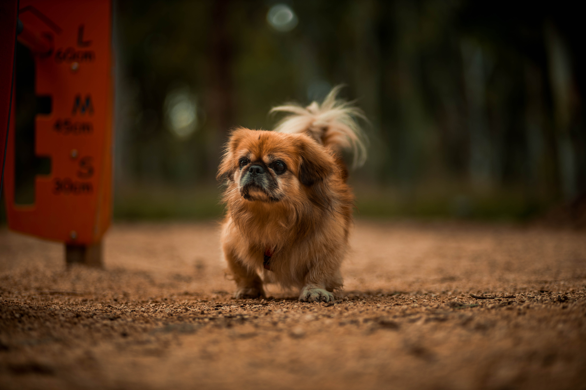

비숑프리제
- 출생지: 프랑스/벨기에
- 수명: 12~15년
- 성격: 말썽을 피우지 않고 사교성도 좋으며 적응력이 뛰어나다
- 크기: 소형(25~29cm)
- 색상: 순백색
비숑프리제는 소형견에 속하며 새하얗고 부드러운 촉감의 곱슬거리는 털이 큰 특징이다. 둥실둥실한 외모 때문에 느릴거 같지만 운동신경이 매우 좋은 편이다. 외관상 푸들과 비교돼 비슷해 보이지만 푸들은 단일모이고 비숑프리제는 이중모이기 때문에 차이가 있다. 사교성이 매우 높아 보호자 이외에도 낯선 사람도 잘따르고 애교를 부린다. 다른 견종이나 어린아이들 에게도 온순한 성격때문에 공격성을 드러내지 않는다. 말썽이나 잘짖지 않기 때문에 반려견으로서 최고의 견종이라 볼 수 있다. 외이염, 요로결석, 슬개골 탈구 등 질병이 걸릴수 있으니 이점 주의 하며 키우길 바란다.

토이푸들
- 출생지: 프랑스
- 수명: 10~15년
- 성격: 활동적이고 명랑하며 지능수준이 높다.
- 크기: 소형(26cm이하)
- 색상: 검은색 , 흰색, 살구색, 청색, 미색 등
토이푸들은 소형견에 속하며 스탠더드, 미니어처 푸들과 마찬가지로 똑똑하며 붙임성이 있다. 몸이 매우 작기 때문에 새끼를 배는 등에 더 많은 문제점을 갖는다. 가장 이상적인 토이 푸들의 체고는 대부분 도그쇼에 공개되는 치수와 같이 10인치 이하이다. 그러나 대부분 도그쇼에서는 약 8인치 가량의 푸들이 공개된다. 그리고 몇몇 개량가들은 토이 푸들보다 더 작은 변종을 만들기 위한 시도를 했으며, 그들을 '티컵' 푸들이라고 불렀다. 규정에는 변종에 대한 어떠한 제약은 없지만, 너무 작은 개들은 출생 때 더 많은 문제점을 갖는다. 당뇨병, 유루증,혈소판 감소증 등 질병에 걸릴수 있으니 이점 주의하며 키우길 바란다.

퍼그
- 출생지: 중국
- 수명: 10~12년
- 성격: 근엄하면서도 총명함.차분하고 밝은편이며, 발랄함
- 크기: 소형(25~28cm)
- 색상: 은색, 살구색, 옅은 황갈색 또는 검은색
퍼그는 소형견에 속하며 400백년전 부터 이어져온 전통있는 고대 품종이다. 퍼그라는 단어는 퍼그너스의 라틴언어 주먹이라는 뜻을 가져왔다. 단두종이라 주먹을 쥔것 처럼 생겼다고 하여 붙인 이름이다. 퍼그는 생각보다 골격이 좋고 활동량이 많아 산책을 자주 시켜줘야 한다. 그리고 멍청한척 하지만 엄청 지능이 좋아서 자기 기분을 잘 표현 하기도 하고 주인에 대한 충성심이 강하다. 그리고 퍼그는 어릴때나 성견일때나 식탐이 엄청 강하다 따라서 운동(산책)을 잘 안시켜 주면 비만이 오기 쉽다. 그리고 눈가와 입주변에 주름이 있기 때문에 주름 사이를 항상 깨끗하게 관리를 해줘야한다. 털이 많이 빠지고 피부평에 잘걸리며 튀어 나온 눈때문에 안구질환이 많이 걸리고 눌린 코 때문에 호흡이 좋지 않아 날이 더운 날에는 산책 시키다가 열사병이나, 호흡곤란이 올수 있으니 이점 주의하며 키우길 바란다.

말티즈
- 출생지: 이탈리아
- 수명: 12~16년
- 성격: 사람을 좋아하고 다정다감 하며 애교가 많음
- 크기: 소형(26cm이하)
- 색상: 흰색
말티즈는 소형견에 속하며 몰타섬이 고향으로 알려졌으며 앙증맞은 외모와 애교 넘치는 성격으로 사랑을 받는 반려견이다. 한국에서 가장 많이 키우는 반려견으로 '국민 강아지' 라고 통하기도 한다. 털이 흰색이여서 변색이 될수 있며 특히 눈물 자국 때문에 눈가의 털색이 갈색으로 변색된다. 눈물 자국을 방치하면 세균이 증식해 피부병의 원인이 될수 있으므로 관리를 잘 해줘야 한다. 활발한 성격 때문에 산책을 좋아하고 다정다감한 성격 때문에 배변교육등 반려견 교육도 잘 받을수 있다. 그리고 유전적으로 관절이 좋지 않아 슬개골 탈구가 자주 일어나며 눈물이 많이 흐르는 유루증 또한 자주 발생된다. 이첨판 폐쇄부전 이라는 심장질환도 잘 걸니 자주 기침 하면 병원을 데려가 건강검진을 받게 하는 것이 좋다. 앞서 설명한 질병에 주의하며 키우길 바란다.

닥스훈트
- 출생지: 독일
- 수명: 10~15년
- 성격: 명랑하고 장난스럽고 헛짖음과 무는 성질이 강함
- 크기: 소형(13~25cm)
- 색상: 붉은색, 적갈색, 검은색, 황갈색, 초콜릿색 등
닥스훈트는 소형견에 속하며 이름은 독일어의 '오소리 사냥' 이라는 뜻이 담겨져 있으며 초기에는 '테켈(teckel)'이라고 불렸었다. 굴에 숨은 오소리나 여우를 끌어내고 토끼를 추적하는데 활약했던 특징이 외형적으로도 나타난다. 다리가 짧고 몸이 길며 후각이 발달되어 있으며 겁이 없는 편이다. 몸이 길어 체중 조절과 운동에 신경 써 주지 않으면 척추 디스크를 유발하기 쉽다. 명랑하고 장난스러운 성격으로 활동하는 것을 좋아하며 주인의 말을 잘 이해해 좋은 친구로 지내기 적합하다. 반면에 헛짖음이나 무는 성질이 높고 배변 가리는 습관을 들이기가 어려우므로 처음부터 단호하게 훈련을 시켜둘 필요가 있다. 움직임이 둔해지고 호흡이 빨라지거나, 좌우 대칭성 탈모, 복부팽창, 당뇨등 이런 현상이 오면 쿠싱증후군 이라는 질병에 걸린 것이다. 이런한 질병을 주의하며 키우길 바란다.

포메라니안
- 출생지: 독일
- 수명: 12~16년
- 성격: 호기심이 많고 애교가 많으며 자기주장이 확실하고 질투심이 많음
- 크기: 소형(28cm이하)
- 색상: 붉은색, 오렌지색, 검은색, 갈색, 초콜릿색, 흰색등
포메라니안은 소형견에 속하며 지금은 작은 애완견이지만 포메라니안은 북극에서 썰매를 끌던 개들의 후손으로 초창기에는 지금보다 큰 편이었다. 공처럼 둥글고 풍성하게 부풀어 오른 털이 특징이다. 여우와 비슷한 깜찍한 얼굴에 작은 눈망울이 매력적이고 보호본능이 생기는 귀여운 품종이다. 영리하고 체구에 비해 대범한 성격을 갖고 있고 호기심도 많다. 욕심과 애교가 많아 항상 주인을 독차지하려고 한다. 귀여운 외모에 비해 튼튼하고 활발하며 활동량이 많아 어린아이의 훌륭한 친구가 될 수 있다. 잘 짖는 편이라서 짖지 못하도록 미리 훈련시켜야 한다. 고집이 센 편이어서 응석을 너무 받아주면 귀여운 악동이 될 가능성이 높다. 포메라니안은 유전병은 슬개골탈구 와 앞다리변형이 자주 일어 나게 되기 때문에 미끄럼 방지 매트와 높은 곳에서 뛰어 내리는 행동을 하지 않도록 하는 것이 좋다. 이러한 점을 주의 하며 키우길 바란다.

파피용
- 출생지: 프랑스, 벨기에
- 수명: 12~16년
- 성격: 대담하지만 온순하며 어리광을 잘부린다
- 크기: 소형(20~28cm)
- 색상: 흰색, 검은색, 갈색털 섞인 조합
파피용은 소형견에 속하며 프랑스어로 '나비'라는 뜻이다. 늘어진 귀가 나비같다고 하여 이런 이름을 갖게 되었다. 단결 같은 피모, 커다란 귀가 특징이다. 냄새도 적다. 16세기의 유럽 귀족 사회에서 특별하게 여기던 개였기 때문인지 제멋대로인 면도 있다. 새끼를 잘 키운다. 또 온순하고 영리해 교육과 훈련이 가능하며 사교성이 좋고 애교도 많아 다른 견종들과 스스럼없이 잘 어울리는 편이다. 보호자에 대한 애정이 많아 장시간 떨어져 있으면 분리불안증이 생길 가능성이 높으며 외로움을 많이 타는 견종이다. 그리고 파피용은 슬개골탈구, 기관허탈, 안검내반, 아토피성피부염 등 과 같은 질병에 걸릴수 있다 하니 이점 주의하며 키우길 바란다.

치와와
- 출생지: 멕시코
- 수명: 10~15년
- 성격: 행동이 빠르고 기민하며 생기발랄하다. 매우 용감하다.
- 크기: 소형(13~22cm)
- 색상: 황갈색, 청색, 초콜릿색, 검은색
치와와는 소형견에 속하며 멕시코 치와와주의 이름을 따서 붙여진 것으로 알려져 있다. 세계에서 체구가 가장 작은 견종이다. 행동이 매우 빠르고 기민하다. 작은 체구이지만 식탐이 많아서 식단을 관리 해주지 않으면 쉽게 비만이 될수 있다. 또 따뜻한 지역에서 살았던 견종이고 몸집이 작아 추위에 약해서 4계절 내내 옷을 입혀줘야한다. 지능은 높지도 낮지도 않은 보통이고 고집이 있어 말을 잘 듣지 않아 훈련시키기 어려운 견종이다. 하지만 주인에게는 충성심이 있어 어릴때 부터 교육을 잘 시켜준다면 좋은 성과가 나올것이다. 안구질환, 슬개골탈구, 심장질환, 특발성 간질 등 이러한 질병이 걸릴수 있으니 주의하며 키우길 바란다.

시츄
- 출생지: 티벳(중국)
- 수명: 15녀이상(잠이 많아 수명이 긴 강아지로 알려짐)
- 성격: 영리하고 활발하며 기민하다. 성격이 다정하고 독립적이다.
- 크기: 소형(22~27cm)
- 색상: 어떤 색이든 허용된다. 두 가지 색(parti-color)인 경우 두 눈 사이에 흰색 띠(white blaze)와 꼬리 끝 부분의 흰색 털은 매우 적합한 요소로 평가된다.
시츄는 소형견에 속하며 티벳에서 유래했으나 중국 왕실에서 키워지면서 발전한 견종이다. 털이 콧등에서 위쪽으로 자라는 특징이 있어 머리 부분에 국화꽃을 닮은 피모가 형성되어 있다. 지능은 높은 편은 아니지만, 주인이 말하면 이해하려 듯 고개를 갸웃거리는 행동을 보인다. 스트레스를 많이 받으면 까칠한 모습도 보이며 낯선 사람을 보면 쉼 없이 짖는 공격적인 모습을 가지고 있다. 먹는것에 대한 집념과 식탐이 강하며 배가 불러도 계속 먹으려는 성향을 보여 보호자가 신경써서 케어해줘야 한다. 기관 허탈, 안검내반증, 관절형성 부전, 간질 등 에 관하여 질병에 걸릴수 있으니 이러한점 주의 하며 키우길 바란다.

페키니즈
- 출생지: 중국
- 수명: 10~14년
- 성격: 겁이 없고 충성심이 강하다. 주변에 무관심한 편이나 소심하거나 공격적이지 않다.
- 크기: 소형(20cm전후)
- 색상: 흰색, 황색, 검정색, 회색등